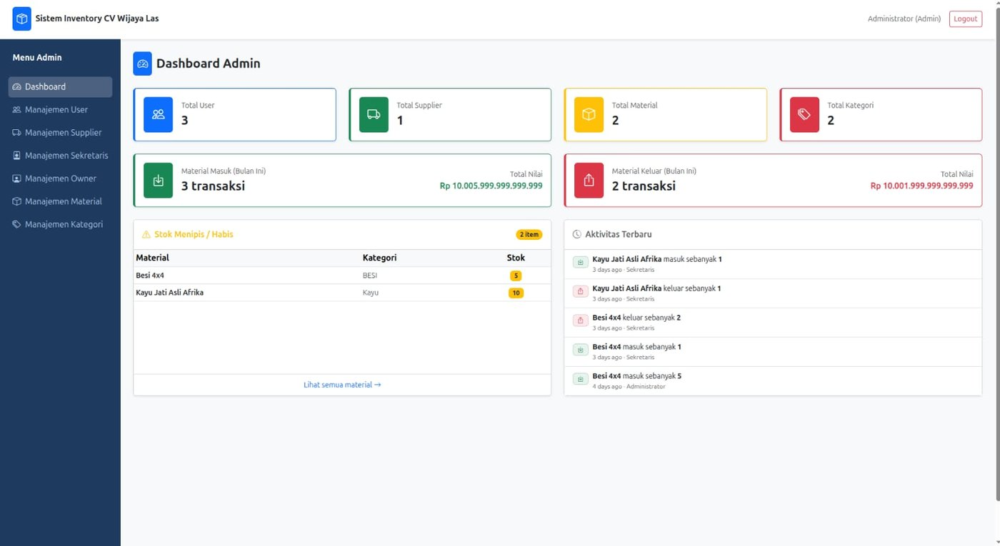
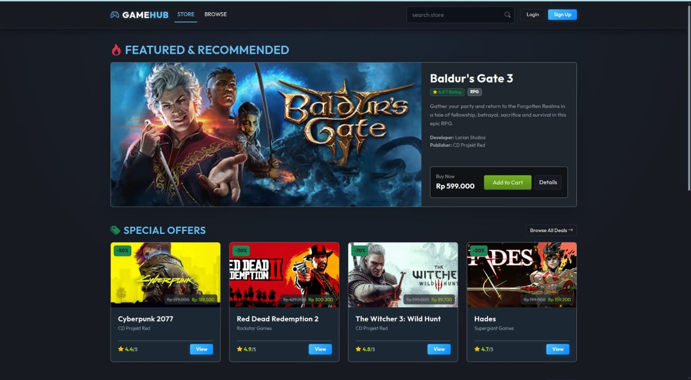
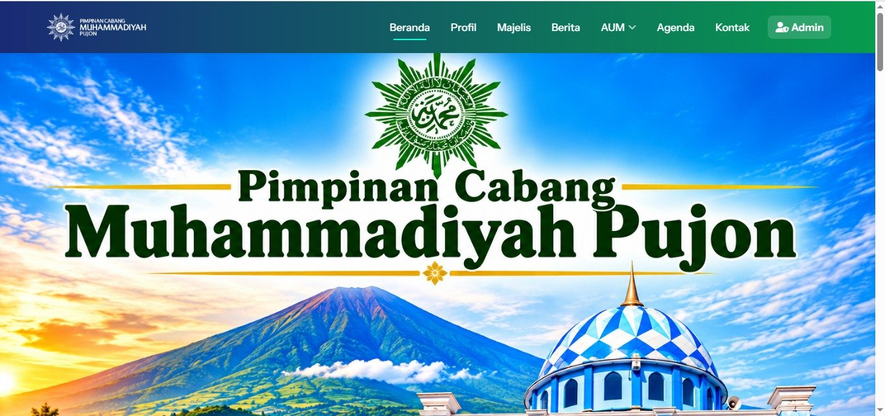
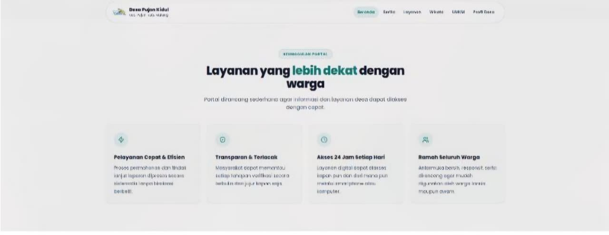

Web Development
Membangun struktur halaman dan tampilan web yang responsif.
PORTOFOLIO PERSONAL · 2026
Mahasiswa Informatika / Fullstack Engineer
Saya suka mengubah ide menjadi pengalaman digital yang berguna, mudah dipakai, dan punya karakter visual.
Curious mind.
Creative build.
Saya adalah mahasiswa Informatika yang tertarik pada pengembangan web, pemecahan masalah, dan desain antarmuka. Saya menikmati proses belajar, bereksperimen, lalu menyempurnakan ide menjadi sesuatu yang bisa digunakan orang lain.
Portofolio ini menjadi ruang untuk mendokumentasikan perjalanan, proyek, dan kemampuan yang terus saya kembangkan.
Kumpulan teknologi dan kebiasaan kerja yang sedang saya bangun.
Membangun struktur halaman dan tampilan web yang responsif.
Melatih logika, menyusun algoritma, dan menulis kode terstruktur.
Menggabungkan kebutuhan pengguna dengan solusi yang sederhana.
Proyek website yang pernah saya bangun menggunakan Laravel.

01 / WEBWebsite manajemen inventory untuk mengelola user, supplier, material, kategori, serta transaksi material masuk dan keluar.

02 / WEBMarketplace game online dengan katalog, penawaran spesial, dan keranjang belanja.

03 / WEBWebsite resmi Pimpinan Cabang Muhammadiyah Pujon berisi profil, majelis, berita, agenda, dan kontak.

04 / WEBPortal desa untuk layanan dan informasi warga Desa Pujon Kidul, Kecamatan Pujon.
2024 — SEKARANG
Universitas Muhammadiyah Malang
Mempelajari dasar pemrograman, algoritma, pengembangan aplikasi, dan teknologi web.
PENGEMBANGAN DIRI
Kuliah · Eksperimen · Kolaborasi
Mengembangkan keterampilan dengan mengerjakan latihan, proyek kelompok, dan eksplorasi mandiri.
ADA IDE MENARIK?
Punya proyek, kesempatan kolaborasi, atau sekadar ingin bertukar ide? Saya terbuka untuk terhubung.
Kirim email